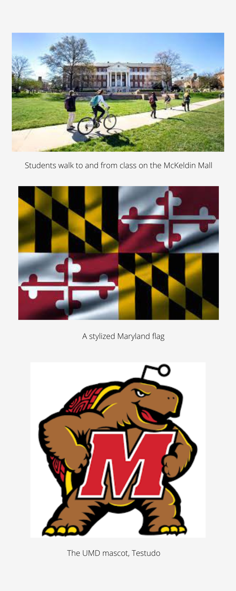

COVID Mitigation at UMD Offers Mixed Results
It’s been just over two years since coronavirus first made headlines in the U.S. and forced colleges to adjust their practices for safety. Students have offered mixed responses to the safety measures, but the efforts have been questionable in preventing the spread of the virus at Univeristy of Maryland.
Universities responded to COVID in a variety of ways, like the UMD, which had no in-person classes until fall 2021, but required mandatory masks. These measures have remained constant since the start of the pandemic, but exactly how effective have the measures been?
To fully analyze the effectiveness of the policies, we are breaking down the data surronding COVID on UMD’s campus and comparable campuses that didn’t have vaccine and mask mandates in class, beginning in fall 2021.
Liberty University offers a great foil for UMD, as both have similar enrollments, but Liberty hasn’t had a mask mandate in place since fall 2021, though students may choose to wear them. It should be noted that case numbers have been speculative and sometimes proven to be unreliable and underreported due to self-testing and reporting at these schools.
Things started off poorly at Liberty without the mask mandate, with hundreds of students falling sick in the first two weeks, averaging 68.7 cases per day, according to the Liberty University COVID Dashboard.
These case numbers forced a reduction of campus activities from August 30, 2021 through September 10, 2021. Even during this time period, masks were not required one campus and the university insisted that student freedoms were not being infringed upon.
The University released a statement saying, “While you will notice changes to some of our campus operations — including classes held online and no large indoor gatherings — this is not a campus wide lockdown. This period is simply a temporary dial back of some larger indoor activities.”
In comparison, UMD had 218.1 cases per day during this same time period. UMD changed its COVID policies, expanded testing and distributed KN-95 masks to students which were required in classes. After these decisions, cases eventually began to subside for the rest of the fall.
Strangely, despite Liberty not changing any of its policies once the campus activity reduction was lifted, the university did not report double digit cases in a single day after October 11.


Maryland did not have such luck, with cases peaking around the end of the fall semester, to the point of having multiple days in December where over 1,000 cases were reported in a single day.
Despite the unchanging rules, the rapid rise in cases caused the university to cancel winter commencement, a decision which was not popular among the students, with news outlets like the Diamondback reporting that some students felt the decision was hypocritical and diminishing to student’s accomplishments.
After this, students from both universities went on winter break, returning at different times in January. This time there were very different numbers of cases immediately following return.
Liberty averaged 28.3 cases per day for the first month after their return to campus, and then after that time frame cases dropped once again under 10 every day with no intervention measures in place.
UMD had more difficulty in the first month, averaging 276.6 cases per day. The campus had an outbreak in mid-Feburary through mid-March, before settling back down to under 10 cases a day.
UMD also made no changes in its approach during this time period as well, leading to questions about how effective its approach was in mitigating the pandemic.Many students are opposed to the continued mandates.
“I personally think it’s unnecessary at this point. Due to the numbers that we’ve had.” - Roy Mauriello, Junior at UMD
It remains to be seen if UMD will change its stance, but the reported numbers show little correlation between the actions of the university and the cases on campus.
Learn More
Click here to visit UMD's Website.
Click here to visit Liberty's Website